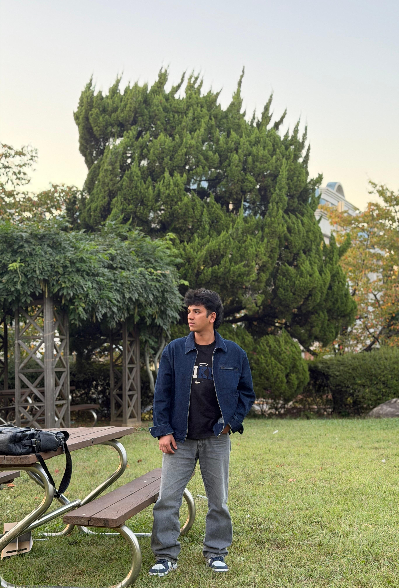

01
Web Programming Team Project
A collaborative university project demonstrating practical web development skills and teamwork.
Explore Project ↗A university student passionate about programming, technology, and continuous learning. I enjoy turning ideas into practical projects and exploring the world of cybersecurity and software development.

My background, interests, and what motivates me.
I am an undergraduate student at Gachon University, developing
my understanding of computer science through academic learning
and hands-on assignments. I enjoy exploring how software and
computer systems work, solving technical problems, and learning
technologies that can make a real difference.
I believe that every project is an opportunity to improve.
I am currently building my foundation in programming, web
development, operating systems, and machine learning, while
exploring my interest in cybersecurity.
Building knowledge one step at a time.
Learning programming, computer systems, web technologies, and other foundations through coursework and practical assignments.
Completed higher secondary education and continued toward university-level learning and technology.
Technologies and tools I have studied and practised.
Programming fundamentals
Basic programming concepts
Web page development
Introductory model building
Command line and OS labs
Version control basics
Development environment
Data handling basics
A selection of my Web Programming coursework and practical work.
A collaborative university project demonstrating practical web development skills and teamwork.
Explore Project ↗My personal website presenting my coursework, web development practice, and learning journey.
View Live Website ↗A practical assignment focused on analyzing website performance using Google Lighthouse and identifying areas for improvement.
Explore Project ↗Fields I enjoy exploring and learning about.
Thank you for visiting my portfolio. Feel free to explore my projects and connect with me through GitHub.
Visit My GitHub ↗